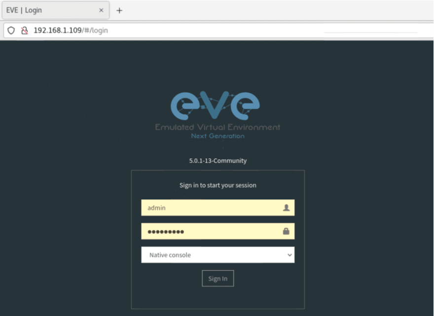
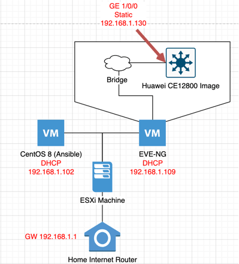
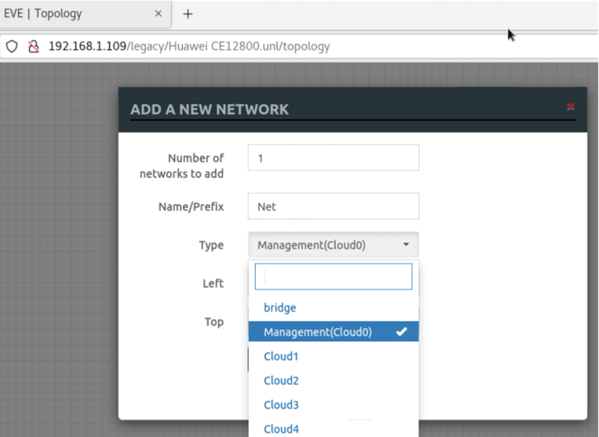
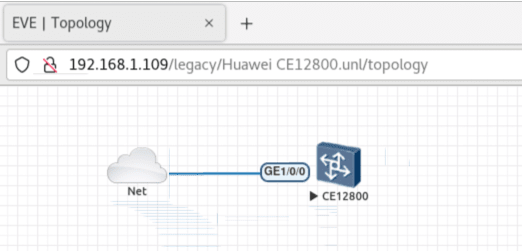
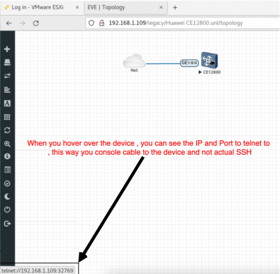

Managing Huawei Cloud_Engine switches using Ansible
Table Of Contents
Introduction
I have been working with the Huawei Cloud Engine series of switches for the Data Center, and one of the great things I was introduced to is the efficient usage of Ansible+Netconf to configure Legacy network devices instead of the trial and error handling way of Python+SSH , which you had to anticipate the delay of the SSH session and to handle a console output using Regex which while very customizable , when it comes to production environments , your supervisors would much prefer a tried and tested technology backed up by the vendor itself .
what we will be discussing
Here I will share the steps I was able to start my journey in configuring the Cloud Engine switches using Ansible .
Steps
1st I would advise you to configure an EVE-NG Community Environment or a GNS3 environment so you are able to test your playbooks (Ansible) before deploying them to the production environment .
1- EVE-NG Installation :
For my deployment , I will be using EVE NG , you can find the download page (https://www.eve-ng.net/index.php/download/) , download the Community version , as it won’t require a retail license .
You can download it as ISO to install or and OVF to run directly , for me , I am running it on ESXI machine .
After you downloaded and installed EVE-NG , you should be able to reach the eve machine using SSH 1st to configure it , default SSH user is “root” and default password is “eve” .
When you login to SSH , you will follow a series of configuration prompts for DNS , NTP and so on , after which you will be able to login to the EVE-NG Web portal to start using the Emulation software .
On the Web portal , the default user is “admin” and password is “eve” .

2- Huawei Cloud Engine EVE Image :
In order to work with EVE , you will have to use a preconfigured image , for our device , please follow the following link to download the Huawei CE12800 VM that we will use : https://forum.huawei.com/enterprise/en/run-ce12800-ne40e-in-eve-ng/thread/653457-861
3- Our lab setup :

After you followed the above guide to add the Huawei Cloud Engine image to EVE , we will be able to create my lab setup :
A) Ansible Machine
I created an ESXi CentOS machine to run the Ansible playbook from , you can install locally on your laptop or machine if you would like , we will be able to reach our Huawei switch from our local Home network .
B) On EVE Portal
-
Add new Lab
-
Go to left side node , “Add an object -> Node -> search Huawei , you find Cloud Engine 12800” , click on it , you will need 2 GB of RAM/Memory reserved per switch to run it :

-
Next , to bridge the switch to our local Network , so we can access it from our local Laptop or in my case from my CentOS VM , you need to go to “Add an object -> Network -> Management (Cloud0) " , and connect one of the switches interface to the cloud (ex: GE1/0/0) , and right click on the switch then choose start : 

##C) Configuring Huawei Cloud Engine for Netconf :
- Hover over the device on EVE to see the IP and Port number you can console to the device using : 
$ telnet 192.168.1.109 32769
- On device , paste the following configuration to add a user and start the Netconf Service :
# Switch Configuration
system
!
interface GE 1/0/0
undo portswitch
undo shutdown
ip address 192.168.1.130 24
quit
!
ip route-static 0.0.0.0 0 192.168.1.1
!
netconf
protocol inbound ssh port 830
!
ssh user client001
!
aaa
local-user client001 password irreversible-cipher SetUesrPasswd@123
local-user client001 service-type ssh
quit
commit
!
ssh server cipher aes128_ctr aes256_ctr aes192_ctr aes128_gcm aes256_gcm
ssh user client001 authentication-type password
ssh user client001 service-type snetconf
!
snetconf server enable
!
commit
!
save
- To confirm that you are able to reach network connectivity , ping your gateway and your Ansible hosting device :
<CloudEngine>ping -c 5 192.168.1.1
PING 192.168.1.1: 56 data bytes, press CTRL_C to break
Reply from 192.168.1.1: bytes=56 Sequence=1 ttl=64 time=5 ms
Reply from 192.168.1.1: bytes=56 Sequence=2 ttl=64 time=3 ms
Reply from 192.168.1.1: bytes=56 Sequence=3 ttl=64 time=4 ms
Reply from 192.168.1.1: bytes=56 Sequence=4 ttl=64 time=2 ms
Reply from 192.168.1.1: bytes=56 Sequence=5 ttl=64 time=3 ms
--- 192.168.1.1 ping statistics ---
5 packet(s) transmitted
5 packet(s) received
0.00% packet loss
round-trip min/avg/max = 2/3/5 ms
<CloudEngine>ping -c 5 192.168.1.102
PING 192.168.1.102: 56 data bytes, press CTRL_C to break
Reply from 192.168.1.102: bytes=56 Sequence=1 ttl=64 time=2 ms
Reply from 192.168.1.102: bytes=56 Sequence=2 ttl=64 time=3 ms
Reply from 192.168.1.102: bytes=56 Sequence=3 ttl=64 time=3 ms
Reply from 192.168.1.102: bytes=56 Sequence=4 ttl=64 time=4 ms
Reply from 192.168.1.102: bytes=56 Sequence=5 ttl=64 time=1 ms
--- 192.168.1.102 ping statistics ---
5 packet(s) transmitted
5 packet(s) received
0.00% packet loss
round-trip min/avg/max = 1/2/4 ms
- To test the Netconf before moving forward to ansible , from your laptop or Ansible hosting VM , run the following command , you should get a long XML output , this means that we are ready for ansible :
$ ssh client001@192.168.1.130 -p 830 netconf
4- Setup of the Ansible machine:
Following are the steps for a CentOS machine
A)Create a virtual Python environment:
Recommended in the time of writing the article to use Python 3.8 and above.
Create a virtual environment , in my case using Python 3.10 :
$ sudo /usr/local/bin/python3.10 -m venv huawei_venv
Activate the created virtual environment , you will find the default Python version is the one you created it with .
The Ansible module we will be using is part of the net_commons collection :
(huawei_venv)$ python --version
Python 3.10.5
# Install Ansible and needed libraries for the lab
(huawei_venv)$ sudo /usr/local/bin/python3.10 -m pip install ansible ansible-core ncclient jxmlease xmltodict ansible-pylibssh
# Check Ansible version
(huawei_venv)$ ansible --version
ansible [core 2.13.3]
config file = None
configured module search path = ['/home/amroashram/.ansible/plugins/modules', '/usr/share/ansible/plugins/modules']
ansible python module location = /usr/local/lib/python3.10/site-packages/ansible
ansible collection location = /home/amroashram/.ansible/collections:/usr/share/ansible/collections
executable location = /usr/local/bin/ansible
python version = 3.10.5 (main, Aug 8 2022, 17:01:37) [GCC 8.5.0 20210514 (Red Hat 8.5.0-15)]
jinja version = 3.1.2
libyaml = True
# Double confirm that the Netcommons collection is installed
(huawei_venv)$ ansible-galaxy collection install ansible.netcommon
B) lets create a simple Inventory and Playbook to run on our current switch :
Inverntory.yaml
# inventory.yaml
all:
# ----- Variables for the whole inventory
vars:
ansible_network_os: community.network.ce
ansible_user: client001
ansible_password: "SetUesrPasswd@123"
ansible_ssh_common_args: '-o ProxyCommand="ssh -W %h:%p -q bastion01"'
# log_path: ansible.log
# ----- Group names and relations to hosts
children:
network:
children:
huawei:
hosts:
leaf_1:
ansible_host: 192.168.1.130
Playbook.yaml : will be adding a vlan (20) to the switch
# Playbook.yaml
- name: test
hosts: leaf_1
connection: ansible.netcommon.netconf
gather_facts: no
tasks:
- name: add_VLAN
community.network.ce_vlan:
vlan_id: 120
name: WEB_Vlan
description: "hello"
To run the playbook on the inventory :
$ ansible-playbook -i huawei_cloud_engine_inventory.yaml huawei_cloud_engine_playbook.yaml
Output confirming change has been done as follows :
PLAY [test] ***********************************************************************************************************************************************
skipping: no hosts matched
PLAY RECAP ************************************************************************************************************************************************
(huawei_venv) [amroashram@centos_proxy huawei_cloud_engine]$ ansible-playbook -i huawei_cloud_engine_inventory.yaml huawei_cloud_engine_playbook.yaml
PLAY [test] ***********************************************************************************************************************************************
TASK [add_VLAN] *******************************************************************************************************************************************
changed: [leaf_1]
PLAY RECAP ************************************************************************************************************************************************
leaf_1 : ok=1 changed=1 unreachable=0 failed=0 skipped=0 rescued=0 ignored=0
# On switch :
<CloudEngine>display vlan
VID Ports
--------------------------------------------------------------------------------
1 UT:GE1/0/1(D) GE1/0/2(D) GE1/0/3(D) GE1/0/4(D)
GE1/0/5(D) GE1/0/6(D) GE1/0/7(D) GE1/0/8(D)
GE1/0/9(D)
120
VID Type Status Property MAC-LRN STAT BC MC UC Description
--------------------------------------------------------------------------------
1 common enable default enable disable FWD FWD FWD VLAN 0001
120 common enable default enable disable FWD FWD FWD hello
#Further Ansible capabilities To check further usage of the netcommon collection with Cloud Engine , you have the following modules available to do changes on the switches :
- Handy command , if you do not know what a module does or how to use it in the Playbook , you can always use :
$ ansible-doc community.network.ce_vlan
- Modules : refer back to link (https://docs.ansible.com/ansible/latest/network/user_guide/platform_ce.html) for up to date modules . community.network.ce_aaa_server community.network.ce_aaa_server_host community.network.ce_acl community.network.ce_acl_advance community.network.ce_bfd_global community.network.ce_bfd_session community.network.ce_bfd_view community.network.ce_bgp community.network.ce_bgp_af community.network.ce_bgp_neighbor community.network.ce_bgp_neighbor_af community.network.ce_dldp community.network.ce_dldp_interface community.network.ce_eth_trunk community.network.ce_evpn_bd_vni community.network.ce_file_copy community.network.ce_info_center_debug community.network.ce_info_center_global community.network.ce_info_center_log community.network.ce_info_center_trap community.network.ce_interface community.network.ce_interface_ospf community.network.ce_ip_interface community.network.ce_lacp community.network.ce_link_status community.network.ce_lldp community.network.ce_lldp_interface community.network.ce_mlag_config community.network.ce_netconf community.network.ce_ntp community.network.ce_ospf community.network.ce_ospf_vrf community.network.ce_reboot community.network.ce_sflow community.network.ce_snmp_community community.network.ce_snmp_target_host community.network.ce_snmp_user community.network.ce_static_route community.network.ce_static_route_bfd community.network.ce_switchport community.network.ce_vlan community.network.ce_vrf community.network.ce_vrf_af community.network.ce_vrf_interface community.network.ce_vrrp community.network.ce_vxlan_tunnel community.network.ce_vxlan_vap
References :
- EVE_NG Installation : https://www.eve-ng.net/index.php/documentation/installation/virtual-machine-install/
- Huawei Cloud Engine EVE Image : https://forum.huawei.com/enterprise/en/run-ce12800-ne40e-in-eve-ng/thread/653457-861
- Huawei Cloud Engine Netconf Configuration : https://support.huawei.com/enterprise/en/doc/EDOC1100198823/4b902677/example-for-establishing-communication-between-the-nms-and-a-device-using-netconf
- Cloud Engine Netcommons Collection Doc : https://docs.ansible.com/ansible/latest/network/user_guide/platform_ce.html
- Python 3.10 veneer : https://docs.python.org/3/library/venv.html